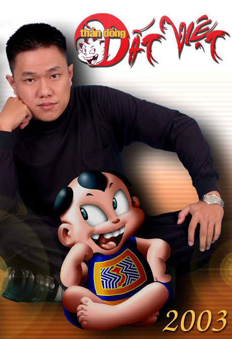
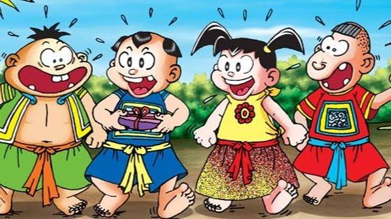
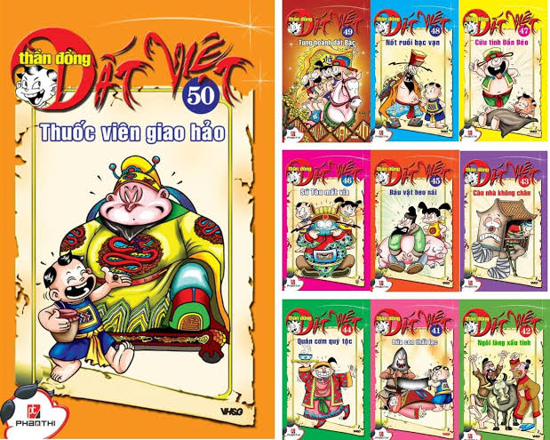

Từ Trạng Tí, Sửu Ẹo, Dần Béo đến Cả Mẹo, Thần Đồng Đất Việt từng trở thành một phần ký ức của nhiều độc giả Việt Nam. Đằng sau những nhân vật ấy là họa sĩ Lê Linh và một hành trình sáng tác nhiều dấu mốc.

Bắt đầu với Thần Đồng Đất Việt
Lê Linh là họa sĩ gắn liền với Thần Đồng Đất Việt, bộ truyện tranh ra mắt tập đầu tiên năm 2002.
Tác phẩm lấy bối cảnh thời Hậu Lê, xoay quanh Lê Tí cùng những người bạn là Sửu Ẹo, Dần Béo và Cả Mẹo.
Thay vì trình bày lịch sử dưới dạng bài học, tác phẩm sử dụng phiêu lưu, hài hước và các tình huống giải đố để đưa kiến thức lịch sử đến gần trẻ em.

Quá trình sáng tác
Theo thông tin được công bố trong vụ tranh chấp quyền tác giả, Lê Linh tham gia thực hiện Thần Đồng Đất Việt từ năm 2002 đến năm 2005.
Trong giai đoạn này, ông trực tiếp tạo hình các nhân vật và tham gia vào quá trình xây dựng nội dung.
Sau tập 78, Lê Linh dừng sáng tác bộ truyện. Những tập tiếp theo được thực hiện bởi các họa sĩ khác.
Cuộc chiến kéo dài về quyền tác giả
Một phần đặc biệt trong sự nghiệp của Lê Linh là vụ tranh chấp quyền tác giả liên quan đến Thần Đồng Đất Việt.
Năm 2007, ông khởi kiện sau khi phát hiện tên một người khác được đăng ký là đồng tác giả. Vụ việc kéo dài nhiều năm với nhiều lần hòa giải và xét xử.
Ngày 18/2/2019, Tòa án Nhân dân quận 1, TP.HCM tuyên Lê Linh là tác giả duy nhất của bộ truyện và bốn hình tượng Trạng Tí, Sửu Ẹo, Dần Béo, Cả Mẹo.
Dấu ấn của Thần Đồng Đất Việt
Bộ truyện sau đó phát triển thêm các nhánh như Thần Đồng Đất Việt Khoa học, Thần Đồng Đất Việt Mỹ thuật, Thần Đồng Đất Việt Toán học và Thần Đồng Đất Việt Hoàng Sa - Trường Sa.
Tác phẩm từng được xem là một trong những series truyện tranh Việt Nam dài nhất, với hơn 220 tập tính cả các bộ liên quan.

Thành tựu không chỉ nằm ở giải thưởng
Lê Linh không phải trường hợp phù hợp để xây dựng bài theo kiểu “bảng vàng giải thưởng”. Giá trị nổi bật trong sự nghiệp của ông nằm ở dấu ấn của Thần Đồng Đất Việt đối với thị trường truyện tranh thiếu nhi Việt Nam.
Vụ kiện bản quyền cũng trở thành một trường hợp đáng chú ý trong lịch sử bảo vệ quyền tác giả đối với truyện tranh tại Việt Nam.